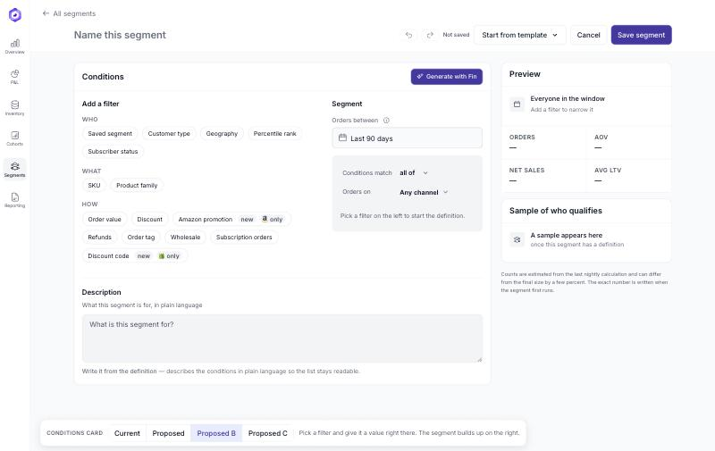
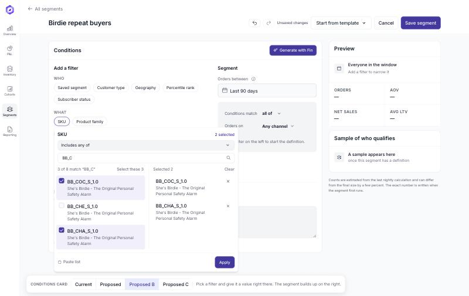
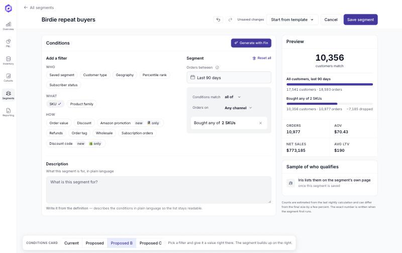
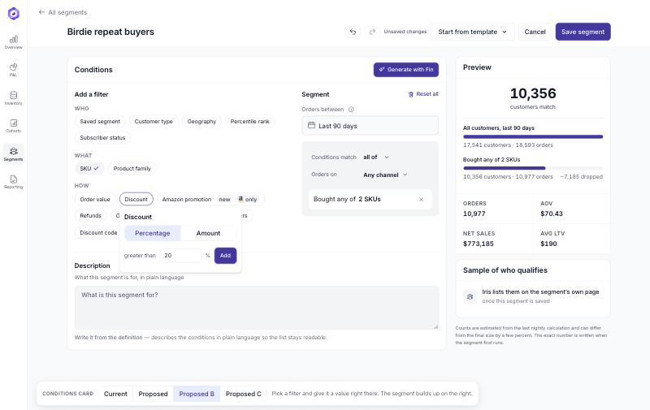
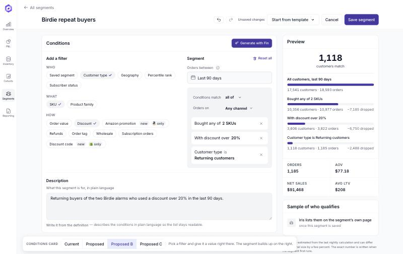
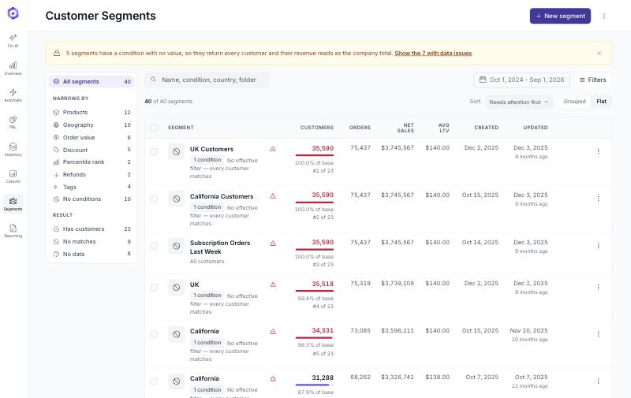

Building a customer segment
Six steps through the proposed builder, in the order a person meets them. Every number on these screens is estimated from the prototype's own dataset.

Filters are grouped as who, what and how. The segment beside them is empty and says what to do about it. Nothing is prefilled, and nothing is hidden behind an accordion.

The value is given at the filter, not in a panel further down the page. Search runs over the code and the product name, the menu says how much is left, three of eight, and the selection is assembled before it counts for anything.

Two codes applied, and the segment reads as a sentence: Bought any of 2 SKUs. The Preview answers at that moment, 10,356 customers, and shows what the condition dropped. Nothing moves while the picking is going on, so the list never reorders under the hand that is reading it.

Percentage or amount first, then the number, with the unit beside the field. A percentage over 100 is refused where it is typed.

17,541 in the window, then each condition with what is left and what fell out, down to 1,118. Orders, AOV, net sales and LTV sit under the funnel, so the question "is this segment worth anything" is answered before it is saved.

Search, filters and sorting on 40 segments, each row carrying its definition, its size against the whole base and when it was last calculated. The banner names the five segments that return every customer, which is a data problem the old page hid.
Both screens are clickable, not pictures: the builder and the list. The earlier versions of the conditions card are behind the switch at the foot of the builder, for comparison.